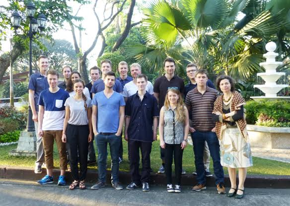

The UP School of Urban and Regional Planning (UP SURP) continues to strengthen in institutional linkages with academic institutions both here and abroad through various academic activities. The school maintains its strong ties with the Technische Universitat Dortmund (TUDo) in Germany in the conduct of faculty, staff, and student exchanges, collaborative researches, lectures, and exchanges of academic information. Fifteen (15) students from the Fakultät Raumplanung (Faculty of Spatial Planning) of TUDo will be in the country for almost a month as part of the study entitled “A Research by the Spatial Planning Students of the Technical University of Dortmund”. The group shall be working in collaboration with the Cities Development Initiative for Asia (CDIA) in the development of an M&E toolkit that will be utilized by CDIA in the monitoring and evaluation of its infrastructure projects. The students have scheduled visits to the cities of Valenzuela and Naga, where the toolkit will be tested, interviews will be conducted, and field tests will be done in the affected locales of both areas. Data from the field will then be utilized to improve the M&E toolkit. Following the field work, a presentation of the findings and the revised version of the M&E Toolkit will be made by the group on March 9, 2015 at 4:00PM, at the 3rd Floor Cariño Multi-Purpose Hall. As the presentation is open to all, interested parties may RSVP to (02) 926-2120.
 UNIVERSITY OF THE PHILIPPINES
UNIVERSITY OF THE PHILIPPINES

SCHOOL OF URBAN AND REGIONAL PLANNING
The premier and only graduate school of urban and regional planning in the Philippines